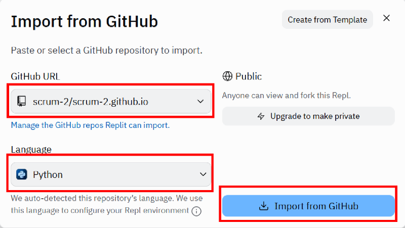

馬達推動 <<
Previous Next >> 近端可攜
Replit
使用 Replit 維護 cmsimde 網站內容時, 可以利用 secrets 環境變數 Tool 保全免費 Replit 帳號 (只能建立完全公開的 Repls) 下的管理者密碼編碼字串.
Replit Documentation: https://docs.replit.com/
Intro to Replit
從 Github 將倉儲導入 Replit 的手冊: https://docs.replit.com/category/using-git-on-replit
利用 Replit 維護 Github 倉儲網站的步驟 (操作說明):
- Connect Github to Replit (目的在讓導入 Replit 的倉儲具有推回 (git push) Github 對應帳號的權限)
- Import repository to Replit (選擇倉儲所使用的程式 Python 語言, 可以直接在 Replit 執行網頁編輯程式)
- 手動取下與倉儲對應的子模組: git submodule update --init --recursive (假如連主倉儲內容與子模組全部手動取下資料, 則可使用 git clone --recurse-submodules 然後接 https 或 SSH 倉儲網址)
- Run Github repository on Replit (由於從 Github 導入 Replit, 並沒有倉儲子模組的內容必須手動導入, 且以 pip 安裝執行 cmsimde 網頁編輯程式所需的模組, 其中包括 flask flask_cors bs4 lxml markdown pelican gevent 等)
- 以 Run 執行動態網站, 以編輯表單中的 config 設定管理者密碼後, 將 config/config 編碼字串移至 secrets 工具中的 config 變數, 然後刪除倉儲中的 config/config 檔案, 以 Stop 關閉動態網站後, 重新以 Run 執行動態網站, 測試是否可以採新修改的管理者密碼登入動態網站.
- 利用 cmsimde 動態網站功能修改內容後, 以 Convert 將資料轉為靜態網頁後, 回到 Replit 以 Git 工具進行內容的新增、提交與推送至對應的 Github 倉儲.
2023.09.15 下午 2a 上課時所使用的 cmsite 版本, 其中的 .replit 與 Replit.nix 必須移除才能使用最新版本的 Python, 因此若當時已經採用作為 Template 的倉儲必須進行修改或重新建立.
另外, 一個 Replit 免費帳號只能與一個 Github 帳號綁定. 以下說明將利用 scrum2 At mde dot tw 對應的 Gmail 登入 Replit 後, 其帳號設定為 scrum2, 並與 Github 帳號 scrum-2 進行綁定.
Repl 為 Replit 網際服務系統中的專案, 一旦選定對應 Language, 當專案以 Run 執行時, 系統將會試著安裝所需模組, 只是 Replit import from Github 並不會取下子模組, 使用者必須自行以 git 指令取得子模組內容.
Replit 專案的設定檔案位於 .replit 與 Replit.nix 等兩個檔案.
希望利用 Replit (Web-based IDE, Integrated Development Environment) 來維護個人網站.
將倉儲 Import 至 Replit, 在 Replit 啟動 cmsimde 網站進行內容編輯之後, 轉為靜態, git commit and git push.
導入畫面中選擇以 Python 作為專案程式語言, 如下圖所示, 導入 scrum-2/scrum-2.github.io 倉儲.

將 scrum-2.github.io 倉儲導入 Replit 之後, 必須手動取下倉儲對應的子模組 (因為 Replit 的 import 功能並不會自動將倉儲所屬的子模組導入).
在既有倉儲所處的電腦中導入子模組的指令為:
git submodule update --init
假如所要取下的倉儲子模組其下還有子模組, 則使用:
git submodule update --init --recursive
假如在 Windows 命令列或 Linux Shell 中直接利用 git clone 取下主倉儲與子模組資料, 則使用:
git clone --recurse-submodules 然後接倉儲的 https 或 SSH 網址 (Github 已經從網站拿掉 SSH 協定語法). SSH 為 Secure SHell 的簡寫, 可在不安全的網路中為網路服務提供安全的傳輸環境.
使用倉儲的 https 網址進行 git clone, 隨後若要改版後 git push, 則需在 .git/config 中納入權限 token. 若使用倉儲的 SSH 網址進行 git clone, 在 Windows 可以利用 Putty 建立權限對應 session (必要條件為 GIT_SSH 環境變數必須指向 putty\plink.exe), 其中包含連線網址 (也就是 github.com), 是否使用 Proxy server 設定 (因為牽涉 IPv4 與 IPv6 網路間的資料傳送), 以及 SSH 連線協定所使用的 private key 位置等. 若 SSH 協定 session 名稱為 my_session, 則利用 SSH 取下 Github 倉儲的指令為:
git clone --recurse-submodules git@my_session:帳號/倉儲.git
此一指令代表是採用 SSH 協定, 以 git 作為帳號, 遠端登入到 github.com 伺服器後, 指定要取下 Github 系統中, 對應"帳號"下的"倉儲". 而進行此一指令之前, 必須將 my_session 對應 private key (若使用 Putty, 則格式為 .ppk) 的 public key 送到 "Github SSH and GPG keys" 設定區 (必須使用 OpenSSH 格式).
git submodule update 指令必須在 Replit 的 Shell tool 頁面中執行. 之後再以 pip install flask flask_cors bs4 lxml markdown pelican gevent 安裝所需模組.
當 .replit 中設定 run = "python3 main.py" 之後, 使用者就可以點擊 Run 按鈕執行 main.py
馬達推動 <<
Previous Next >> 近端可攜